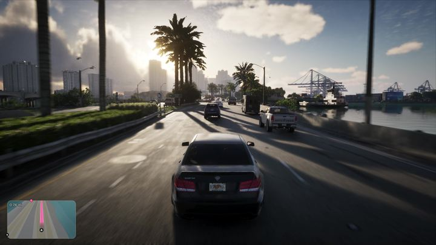
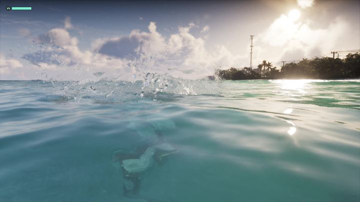
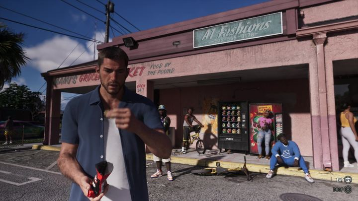
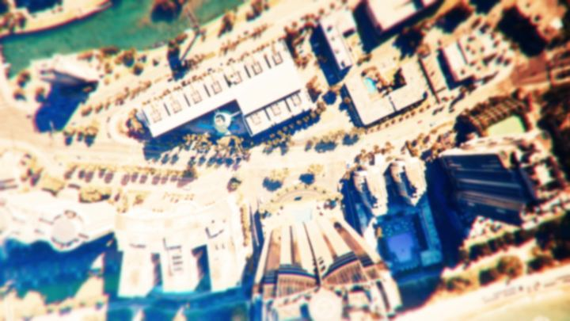
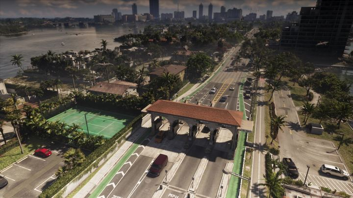
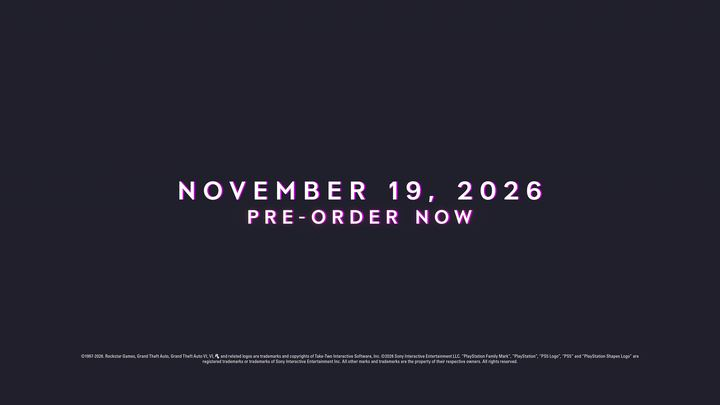

Карта и справочник GTA 6 на русском
Твоя карта Леониды.
Отмечай найденное, разбирайся в деталях, играй глубже.
Мой прогресс
Отмечай места на карте — прогресс сохранится на этом устройстве.
До выхода GTA 6 · 19 ноября 2026
–дней
–часов
–минут
–секунд
Как это работает
Найди
Карта Леониды: регионы и места из официальных видео. После релиза — коллекционки, секреты, магазины и занятия.
Карта → ПоймиРазборы кадров, пасхалки, отсылки к реальной Флориде и прошлым GTA: почему здесь это место, этот знак, этот персонаж.
Разборы → ОтмечайТвой прогресс: что нашёл, что попробовал, что осталось. Чек-листы, калькулятор прохождения и тесты.
Инструменты →Свежее

Сводка дня: 29 сентября 2026Обновлено 29.09.2026

Слух: в GTA 6 потратили $300 млн на воду — с ураганами и сёрфингомОбновлено 29.09.2026

Разбор кадра: Джейсон ест чипсы у Mami’s GroceryОбновлено 29.09.2026

Сливы GTA 6 летом 2026: что говорят игроки об истории CyberLeekОбновлено 29.09.2026

Погода в GTA 5 и GTA 6: от смога Лос-Сантоса к флоридским штормамОбновлено 29.09.2026

Миф: GTA 6 снова перенесут, Rockstar всегда переноситОбновлено 29.09.2026